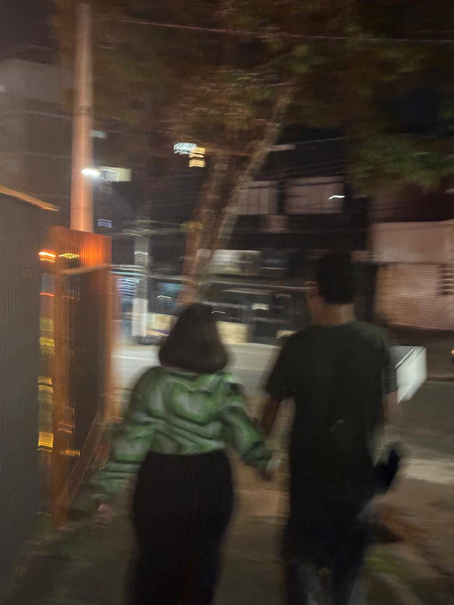
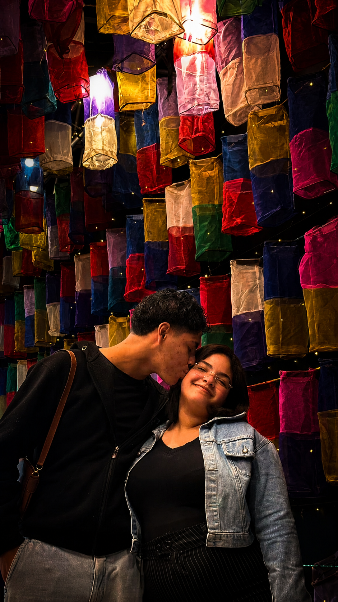
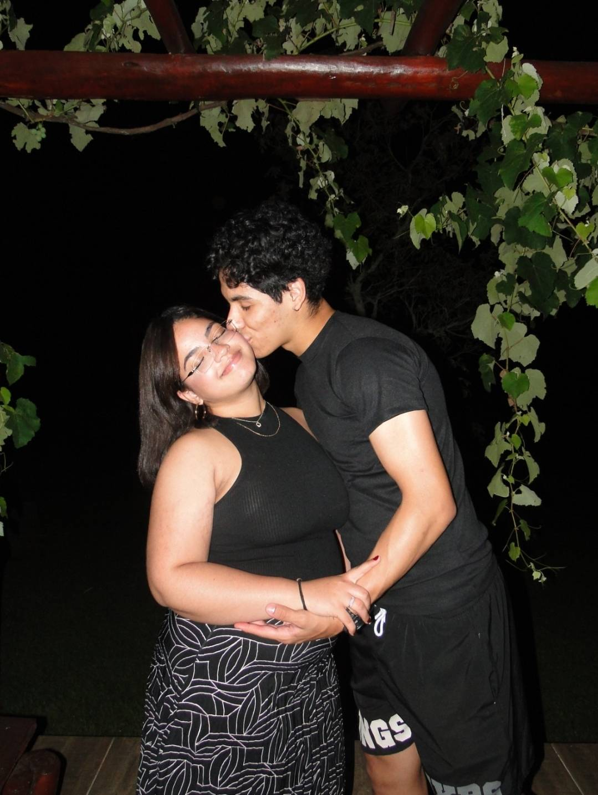
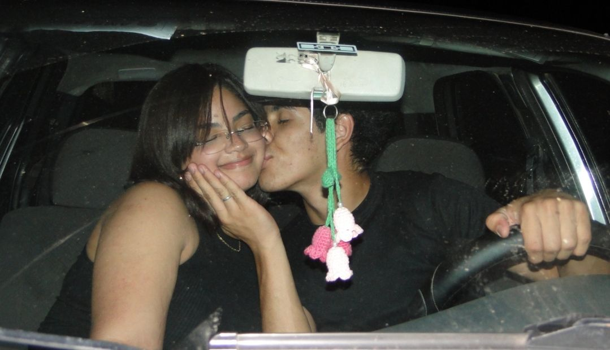
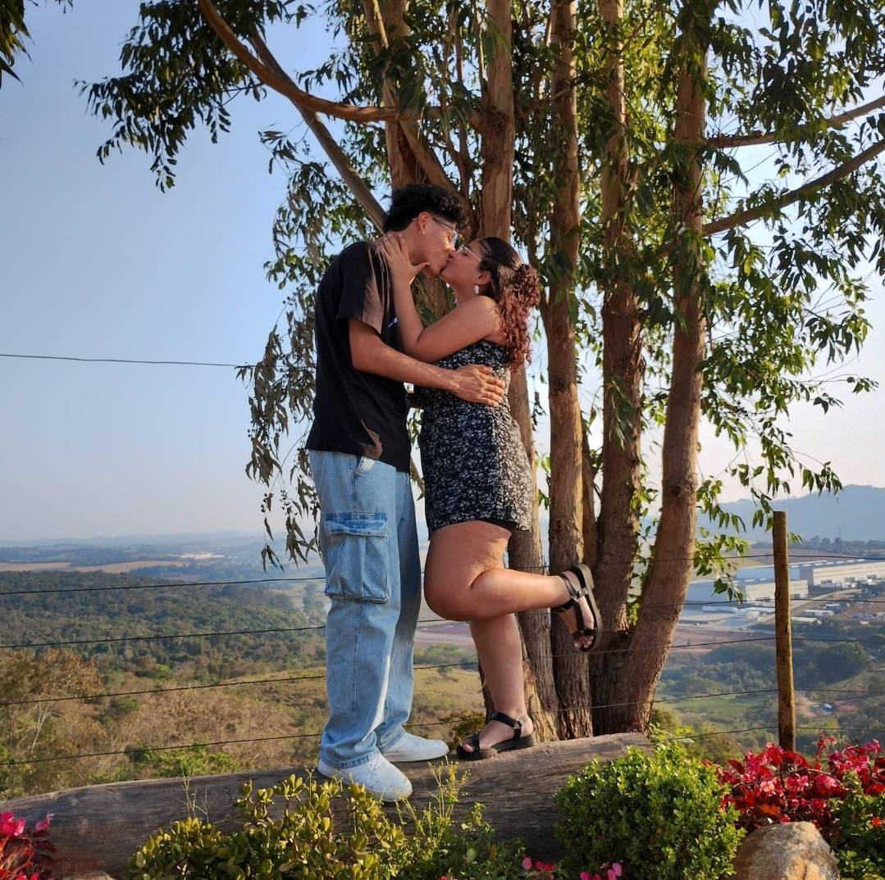

uma órbita de dois
2 anos
e 9 meses
Um tanto de tempo, um tanto de nós com algumas recordações únicas

O dia que comemos de montão
Amo essa foto pois mostra nossa união e alegria em um momento tão especial. Esse dia foi meu aniversário e você estava ali, e como sempre, você estava maravilhosa

Evento Coreano
Neste evento, você me mostrou que a cultura coreana é tão rica quanto a nossa conexão. Cada momento foi uma nova descoberta, e também foi o dia que conhecemos o ALIGATÔ GOZAIMASUUU(namorado da isabela)

A seção de fotos
Amo essa foto pois mostra o quão explendida você é em cada momento. Seu olhar tem o poder de iluminar até os dias mais sombrios. Seu sorriso é a melhor parte do dia. Seu cheiro é o que me faz sentir em casa.

Ainda nessa seção de fotos, tiramos essa foto, que representa mais um dos momentos mais adoráveis pois representa nosso futuro juntos.
O dia do Aquário
Esse dia foi especial porque foi a segunda vez em que fomos juntos na praia, e a sensação de estar ali, com você, foi incrível. Ainda mais de irmos juntos sozinhos no aquário conhecer os bixinhos e até mesmo PINGUINS

A foto que nos marca
Essa foto me marca porque captura o momento em que percebi o quanto você é importante para mim. O sorriso no seu rosto, a luz nos seus olhos tudo nela me lembra do amor que compartilhamos.
Obrigado por
esse tanto de tempo
Obrigado por cada dia que somou até estes 2 anos e 9 meses. Por transformar paixão em cuidado, e cuidado em rotina, aquela que a gente escolhe viver todo dia.
Obrigado pelos altos, que comemoramos juntos, e pelos baixos, que atravessamos sem largar a mão um do outro. A gente sempre encontrou um jeito de se resolver e isso, pra mim, vale mais que qualquer perfeição.
Que venham muito mais capítulos.